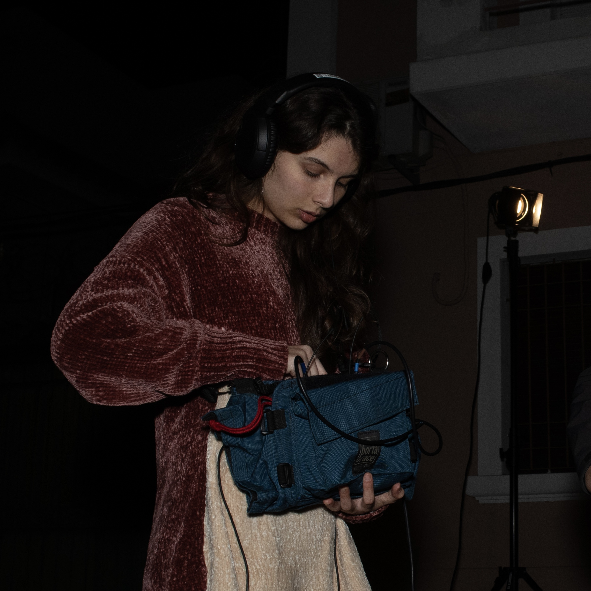

Sound Designer / Producción Audiovisual & Musical
Sonido directo durante todo el proyecto
Captura de audio durante la filmación
Captura de audio para el texto inicial
Composición musical, diseño de sonido
Dirección de sonido y captura, post producción
Restauración de audio y post producción
Dirección de sonido y captura, post producción
FOH durante toda la presentación de la banda